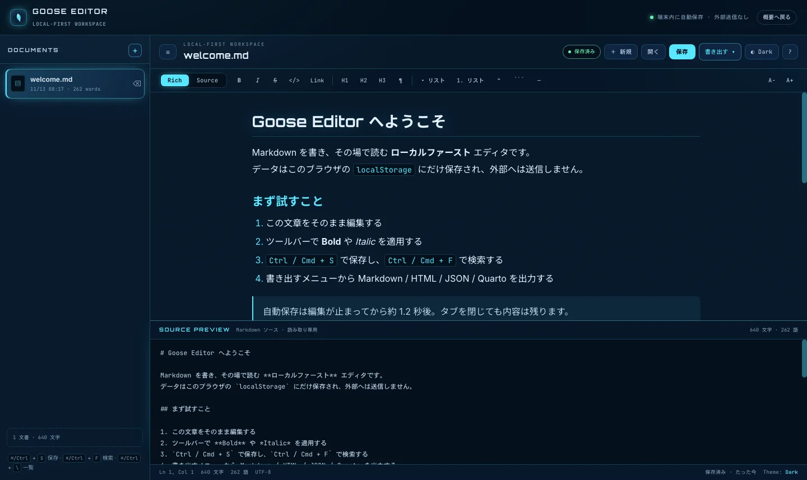

Rich ⇄ Markdown 双方向同期
見出し・太字・斜体・打ち消し・リンク・リスト・引用・コードブロック・水平線に対応。HTML を Markdown へ変換して保存します。
リッチテキストで書き、Markdown ソースをその場で確認する。書いた内容は端末内に自動保存され、 PWA としてインストールすればオフラインでも開けます。サーバーへ送らない、軽量な編集環境です。

リッチ編集と Markdown ソースは同じドキュメントモデルを共有します。どちらで書いても、もう一方へ即時に反映されます。
見出し・太字・斜体・打ち消し・リンク・リスト・引用・コードブロック・水平線に対応。HTML を Markdown へ変換して保存します。
編集面の下に Markdown ソースを常時表示。Source モードでは逆に、描画結果をプレビューとして確認できます。
入力が止まって約 1.2 秒で localStorage へ保存。⌘/Ctrl + S で即時保存もできます。外部送信はありません。
大文字小文字、正規表現、全角半角の正規化に対応。ヒット箇所はソース上でハイライトされます。
Markdown / HTML / JSON / Quarto / Plain Text。すべて Blob として端末内で生成し、ダウンロードします。
manifest と Service Worker を同梱。ホーム画面へ追加でき、再訪時はキャッシュしたシェルから起動します。
作業環境に合わせて 3 つの配色を切り替え。文字サイズも 12〜22px の範囲で調整できます。
左の一覧で文書を切り替え、ダブルクリックで名前を変更。Markdown ファイルを画面へドロップして開けます。
パース・シリアライズ・インライン解析・エクスポート・検索・統計は lib/model.js に分離し、Node のテストで検証します。
入力はどちらの面からでも同じモデルへ流れ、保存と書き出しはローカルで処理されます。
Rich の contenteditable、または Source の textarea へ入力。
HTML → Markdown、Markdown → ブロックへ変換し、同一文書として保持。
約 1.2 秒のデバウンスで localStorage へ。文書一覧と最終保存時刻を更新。
Markdown / HTML / JSON / Quarto / Text をローカル生成してダウンロード。
ブラウザだけで動くプロトタイプとして実装済み。Goose コンパイラが無い環境でも検証できるよう、コアロジックを分離しています。
| 項目 | 状態 | 備考 |
|---|---|---|
| Rich / Source 同期 | 実装済み | HTML → Markdown 変換と双方向更新 |
| 自動保存 | 実装済み | localStorage、約 1.2 秒デバウンス、手動保存 |
| 検索・置換 | 実装済み | 正規表現 / 大文字小文字 / 全角半角 |
| エクスポート | 実装済み | Markdown / HTML / JSON / Quarto / Text |
| PWA / オフライン | 実装済み | manifest、Service Worker、192 / 512 アイコン |
| モデルテスト | 20 件 | node --test GooseEditor/editor/lib/model.test.js |
| Goose コンパイラ連携 | 未接続 | 本プロトタイプはブラウザ版。Goose コアへの差し替えを想定 |
| 同期・共同編集 | 対象外 | ローカルファーストを優先し、サーバーを持たない |
公開版はそのまま利用できます。ローカルで確認する場合は静的サーバー経由で開いてください（Service Worker の登録に必要です）。
リポジトリ直下で HTTP サーバーを起動し、/GooseEditor/editor/ を開きます。
cd goose-sandbox python3 -m http.server 8765 # → http://localhost:8765/GooseEditor/editor/
テストは node --test GooseEditor/editor/lib/model.test.js。ビルド工程や外部依存はありません。